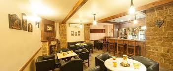
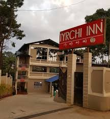
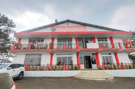
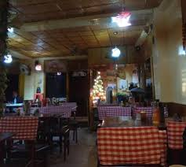

Restaurant
Near and Around Ialong Park
Discover the vibrant culinary scene near Ialong Park. From cozy cafés to fine dining, there’s something for everyone. Enjoy local delicacies and international flavors, all while taking in the beautiful surroundings of the park.
Tryshi Inn Restuarant
Tryshi Inn Restaurant is a cozy dining spot known for its warm hospitality and a diverse menu that blends local and international cuisines. Guests can enjoy traditional dishes alongside modern culinary creations, often made with fresh, locally sourced ingredients. The inviting atmosphere makes it perfect for family gatherings, romantic dinners, or casual outings with friends. With occasional special events and live music, Tryshi Inn offers a delightful dining experience for both locals and travelers.
HighWind Restuarant

**HighWind Restaurant** in Jowai is a popular dining destination that offers a scenic view and a welcoming atmosphere.
Known for its diverse menu, the restaurant features a range of dishes, including local specialties and international
cuisine, catering to various tastes.
Guests can enjoy both vegetarian and non-vegetarian options, often made with fresh, locally sourced ingredients. The
restaurant's ambiance is typically relaxed, making it an ideal spot for family meals, gatherings with friends, or
special occasions.
HighWind Restaurant also emphasizes customer service, ensuring a pleasant dining experience for everyone who visits.
Whether you're looking for a quick bite or a leisurely meal, HighWind is a great choice in Jowai.
Sunrise Chinese Restuarant

Sunrise Chinese Restaurant is a delightful dining spot known for its authentic Chinese cuisine. Located in Jowai, it
offers a cozy atmosphere perfect for families and friends looking to enjoy a meal together. The menu typically features
a variety of traditional dishes, including stir-fries, dumplings, noodles, and a selection of flavorful sauces.
Sunrise Chinese Restaurant often prioritizes fresh ingredients, ensuring that each dish is prepared to perfection.
Whether you're craving spicy Szechuan dishes or comforting Cantonese fare, this restaurant caters to diverse palates.
With its friendly service and inviting ambiance, Sunrise Chinese Restaurant is a great place to indulge in delicious
Chinese food.
CAfe 306 JOWAI

**Cafe 306** in Jowai is a vibrant and trendy spot that appeals to both locals and visitors. Known for its cozy
ambiance, the café offers a diverse menu that includes a variety of coffees, teas, and light snacks, making it an ideal
place for casual meetings or relaxation.
Guests can enjoy freshly brewed beverages, along with a selection of pastries, sandwiches, and other quick bites. The
café often emphasizes a welcoming atmosphere, perfect for spending time with friends or enjoying some quiet time with a
book.
With its charming decor and friendly staff, Cafe 306 has become a popular hangout spot in Jowai, where people can unwind
and savor great food and drinks.